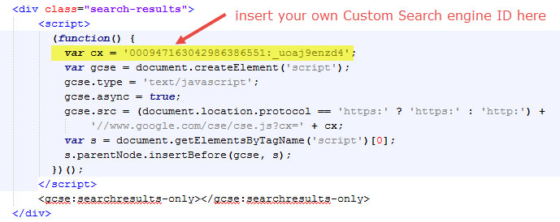
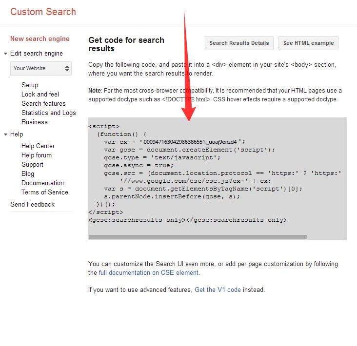
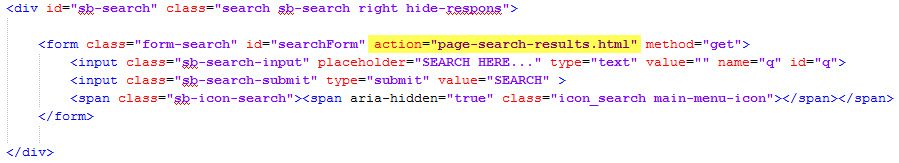
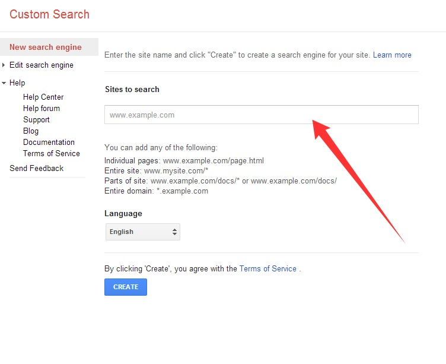
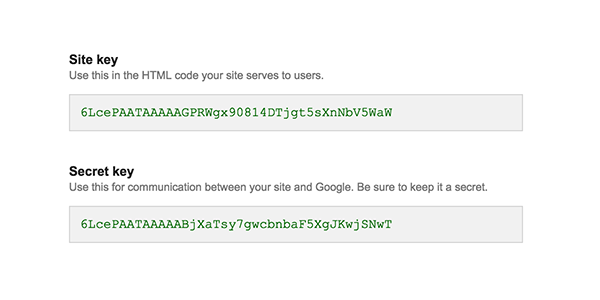

Haswell
Responsive Multi-Purpose Template
- created: 10/07/2015
- latest update: 09/04/2020
- by: abcgomel
- themeforest.net/user/abcgomel/portfolio
- email: abcgomel@gmail.com
Thank you for your purchase! If you have any questions that you feel should have been in this document, please log in using the account used to purchase the file and email via my user page contact form here. Thanks so much!
For questions on basic HTML, JavaScript or CSS editing - please give your question a quick Google or visit W3Schools as theme issues get top priority. You will need some knowledge of HTML/CSS to edit this theme.
Helpful Tips
Do not start from scratch, use an existing page I have created and modify it to learn how it works
Quickly find what you're looking for in this document by using your browser's "Find in Page" feature, typically Control+F.
Trying to locate/replace text, styles or code in themes? "Find in Files" command which is commonly found in any decent text editor which will save you hours of searching
Getting an error message, chances are someone else has seen it too, try a google search for a quick fix.
Many times plugins are to blame when a site fails, always try disabling any third-party plugins if you encounter an error you can't solve.
Don't forget to re-explore the live demo for layouts, usage ideas and sample code
Due to local security restrictions, some things will not work locally, especially in Chrome. But everything will work once the files have been updated to your website.
Files Structure
- css (Template CSS)
- fonts (Flexslider icon font)
- revo-slider (revo-slider CSS )
- owl-carousel(owl-carousel CSS )
- icon-fonts
- text-rotator
- animate
- ie warning
- video (All Videos)
- audio (All Audio)
- images (All Images)
- js (Template JS)
- views (JS to run in specific pages. I.E: Home or Contact Us)
- rs-plugin (Revolution Slider files)
- revo-slider-5 (Revolution Slider 5 files)
- revo-slider-demo (Revolution Slider 5 Demo files)
- php (PHP Helpers - I.E: Contact Us form)
- fonts (All fonts)
HTML Structure
The template is based on Bootstrap Framework - http://getbootstrap.com/
The default Bootstrap grid system utilizes 12 columns, making for a 1170px wide (in template 1200px) depending on your viewport. Below 767px viewports, the columns become fluid and stack vertically.
<div class="container">
<div class="row">
<div class="col-md-12">
...
</div>
</div>
</div>
If you need more information, please visit this site: http://getbootstrap.com/
CSS Sttructure
These are the CSS file we're using in the template:
- style.css (main CSS) - flexslider-for-posts.css (Flexslider CSS for carousels in posts) - flexslider.css (Flexslider CSS for slider) - bootstrap.min.css - (Generic styles, resets & normalization) - bootstrap-theme.min.css - (Generic styles, resets & normalization) - animate.min.css - (Animate CSS) - magnific-popup.css - (Magnific popup CSS in style.css file) - magnific-anim.css - (Animation for magnific-popup CSS style.css file) - icons-fonts.css - (CSS of icon fonst - Elegant icons font, Font Awesome, Linea Icons) - ie-warning.css - (ie warning CSS) - ie8-fix.css - (ie8 fix CSS) - text-rotator.css - (Text rotator CSS)
JavaScript
jQuery - is a Javascript library that greatly reduces the amount of code that you must write.
For more information, please visit http://www.jquery.com
You can see some help info, when click links which are below each regarding script:
- main.js (main JS) - jquery.flexslider.js (Flexslider JS) - http://www.woothemes.com/flexslider/ - flexslider.js (Options of Flexslider) - bootstrap.min.js - (Bootstrap JS) - http://getbootstrap.com/ - contact-form-validation.js - (Contact form validation JS) - jquery.validation.js - (JS for contact form validation) - http://jqueryvalidation.org/ - jquery.placeholder.js - (JS for placeholder validation) - https://github.com/mathiasbynens/jquery-placeholder - gmap3.min.js - (Google maps plugin JS) - http://gmap3.net/ - jquery.countdown.min.js - (JS plugin for countdown) - http://hilios.github.io/jQuery.countdown/ - jquery.easing.1.3.js - (JS for animations) - https://github.com/gdsmith/jquery.easing - jquery.magnific-popup.js - (JS plugin for lightbox) - http://dimsemenov.com/plugins/magnific-popup/ - jquery.nav.js - (JS for "one page" navigation) - https://github.com/davist11/jQuery-One-Page-Nav - jquery.isotope.pkgd.min.js - (JS plugin for filter & sort) - http://isotope.metafizzy.co/ - jquery.masonry.pkgd.min.js - (JS plugin for filter & sort) - http://masonry.desandro.com/ - jquery.imagesloaded.pkgd.min.js - (JS plugin for filter & sort) - https://github.com/desandro/imagesloaded - jquery.appear.js - (JS for event fired when in the user’s viewport) - https://github.com/protonet/jquery.inview - wow.min.js - (JS plugin for animation when you scroll) - http://mynameismatthieu.com/WOW/docs.html
Customization & Styles
Create new page
Haswell has been built using a modular, responsive blocks that makes designing easier. Combining blocks you can easily get a new page.
Mix blocks, like lego bricks, and you can get unlimited variations of pages. This allows easy create unique pages. In Haswell includes more than 500 function blocks it allows you to create a huge number of combinations of pages for your unique site
CSS, JS, HTML files were created on the principle of modularity. If you do not need all elements for your site, you can easily remove the unnecessary components. Code of the template clean, friendly and well commented. This makes it easy to edit and customize the template.
Also, for better performance you can compress (minify) your files using online services or node/grunt, or any other method you like
For example online services for file compression
- CSS min - http://cssminifier.com/
- JS min - https://javascript-minifier.com/
- Images min - https://tinypng.com/
- HTML min - http://www.willpeavy.com/minifier/
or use any other services
You can create new page guided by the same principles like in video tutorial - https://www.youtube.com/watch?v=8WxutoccPgs
Change color
If you want to change color of the template, you must edit style.css
Example, change yellow color to blue. Find row "color:#ffea00" and change it to this "color:#466fcc"
Change background
If you want to change color of the template, you must edit style.css
Change fonts
To change the embedded font, please take a look in the head part of the website and you will find this tag:
<link href='http://fonts.googleapis.com/css?family=Open+Sans:300italic,400italic,700italic,700,300,400' rel='stylesheet' type='text/css'>
To change the font, first go to http://www.google.com/webfonts choose a font and use the generated code.
Change logo
Change logo
Video tutorial - https://www.youtube.com/watch?v=mSg2ck3BLKI
Icons
Haswell theme include some popular icon fonts: Font Awesome, Elegant Icon Font, Glyphicons, Linea Icons. More information you can find on page icons.html and on the links: http://fortawesome.github.com/Font-Awesome/ , http://www.elegantthemes.com/blog/resources/elegant-icon-font , http://getbootstrap.com/components/, http://linea.io/
They placed in "fonts" folder. Also don't foget to connect CSS file with icons - "icons-fonts.css"
<!-- ICONS ELEGANT FONT & FONT AWESOME & LINEA ICONS --> <link rel="stylesheet" href="css/icons-fonts.css" >
If you want to use an icon - <div class="icon icon-software-font-smallcaps"></div> simply paste it where you want and connect css file - "icons-fonts.css" to the HTML page. You simply connect "icons-fonts.css" file to the HTML page and use any icon presented on page "icons.html"
Sliders
Revolution Slider
This is one of the best slider plugins we have seen so far.
"Slider Revolution is a fully developed slide displaying system offering the capability to show images, videos and captions paired with simple, modern and fancy 3D transitions. On top of that, Slider Revolution is fully responsive and mobile optimized and can take on any dimensions."
More details about Revo Slider you can find in "Documentation" folder.
Revolution Slider 5
This is one of the best slider plugins we have seen so far.
"Slider Revolution is a fully developed slide displaying system offering the capability to show images, videos and captions paired with simple, modern and fancy 3D transitions. On top of that, Slider Revolution is fully responsive and mobile optimized and can take on any dimensions."
Documentation you can find in folder "Documentation/Revolution-Slider-5"
If you have "Error at loading Slider Revolution 5 Extrensions. Local Filesystem Detected"
This is the default Revolution Slider 5 error because you tried to open the file locally. Please, upload the files to you a local server or web server.
Or you can do this:
The Revolution Slider (latest version 5.x) now in local environment requires extensions links (you don't need to include on local server or web server).
Please follow these instructions:
Go to the bottom of page after these Revolution slider scripts
<!-- REVOSLIDER SCRIPTS -->
<script src="revo-slider/js/jquery.themepunch.tools.min.js" type="text/javascript">
</script>
<script src="revo-slider/js/jquery.themepunch.revolution.min.js" type="text/javascript">
</script>
place these code for calling extensions of revolutions slider
<!-- SLIDER REVOLUTION 5.0 EXTENSIONS
(Load Extensions only on Local File Systems !
The following part can be removed on Server for On Demand Loading) -->
<script src="revo-slider/js/extensions/revolution.extension.actions.min.js" type="text/javascript"></script>
<script src="revo-slider/js/extensions/revolution.extension.carousel.min.js" type="text/javascript"></script>
<script src="revo-slider/js/extensions/revolution.extension.kenburn.min.js" type="text/javascript"></script>
<script src="revo-slider/js/extensions/revolution.extension.layeranimation.min.js" type="text/javascript"></script>
<script src="revo-slider/js/extensions/revolution.extension.migration.min.js" type="text/javascript"></script>
<script src="revo-slider/js/extensions/revolution.extension.navigation.min.js" type="text/javascript"></script>
<script src="revo-slider/js/extensions/revolution.extension.parallax.min.js" type="text/javascript"></script>
<script src="revo-slider/js/extensions/revolution.extension.slideanims.min.js" type="text/javascript"></script>
<script src="revo-slider/js/extensions/revolution.extension.video.min.js" type="text/javascript"></script>
Also Documentation and More details about Revo Slider you can find here http://codecanyon.net/item/slider-revolution-responsive-jquery-plugin/2580848
Flexslider
Flexslider is the slider you'll find in the content.
Flexslider is a simple slideshow script but with lots of options. You can find more documentaion here http://www.woothemes.com/flexslider/
Lightbox
In the template uses several types of popups - Bootstrap and Magnific Popup.You can use one of two types or use any your plugin
- Use possibilities of the bootstrap. For more details read here - http://getbootstrap.com/javascript/#modals
Example on page shortcodes.html#modals in the themplate
Please don't forget to connect bootstrap js files
<!-- Include all compiled plugins (below), or include individual files as needed --> <script src="js/bootstrap.min.js"></script>
Example
<!-- Large modal --> <button class="btn btn-primary" data-toggle="modal" data-target=".bs-example-modal-lg">Large modal</button> <!-- Modal --> <div class="modal fade bs-example-modal-lg bootstrap-modal" tabindex="-1" role="dialog" aria-labelledby="myLargeModalLabel" aria-hidden="true"> <div class="modal-dialog modal-lg"> <div class="modal-body"> <div class="modal-content"> <div class="modal-header"> <button type="button" class="close" data-dismiss="modal" aria-hidden="true">×</button> <h4 class="modal-title" id="myLargeModalLabel">Modal Heading</h4> </div> <div class="modal-body"> <p>Praesent commodo cursus magna, vel scelerisque nisl consectetur et. Vivamus sagittis lacus vel augue laoreet rutrum faucibus dolor auctor.</p> <p>Aenean lacinia bibendum nulla sed consectetur. Praesent commodo cursus magna, vel scelerisque nisl consectetur et. Donec sed odio dui. Donec ullamcorper nulla non metus auctor fringilla.</p> <p>Cras mattis consectetur purus sit amet fermentum. Cras justo odio, dapibus ac facilisis in, egestas eget quam. Morbi leo risus, porta ac consectetur ac, vestibulum at eros.</p> <p>Praesent commodo cursus magna, vel scelerisque nisl consectetur et. Vivamus sagittis lacus vel augue laoreet rutrum faucibus dolor auctor.</p> <p class="nobottommargin">Aenean lacinia bibendum nulla sed consectetur. Praesent commodo cursus magna, vel scelerisque nisl consectetur et. Donec sed odio dui. Donec ullamcorper nulla non metus auctor fringilla.</p> </div> </div> </div> </div> </div>
- Use possibilities of the magnific popup. Documentation you can read here - http://dimsemenov.com/plugins/magnific-popup/documentation.html
Example on page shortcodes.html#lightbox in the themplate
Please don't forget to connect magnific popup js files
<!-- MAGNIFIC POPUP --> <script src="js/jquery.magnific-popup.min.js"></script>
And add class "mfp-plugin" for required block
By default, Magnific Popup has four types of content: image, iframe, inline, and ajax. There is no any “auto-detection” of type based on URL, so you should define it manually. More details you can read here - http://dimsemenov.com/plugins/magnific-popup/documentation.html
The following types are preinstalled in the template:
Image
Example<div class="lightbox-item"> <a href="images/content/blog-big-1.jpg" class="lightbox mfp-plugin"> <div class="port-img-overlay"> <img class="port-main-img" src="images/content/blog-big-1.jpg" alt="img" > </div> <div class="port-overlay-cont"> <div class="port-btn-cont"> <div aria-hidden="true" class="icon_search"></div> </div> </div> </a> </div>Lightbox gallery
Example<div class="popup-gallery demo-popup-gallery mfp-plugin"> <a href="http://farm9.staticflickr.com/8242/8558295633_f34a55c1c6_b.jpg" title="The Cleaner"><img src="http://farm9.staticflickr.com/8242/8558295633_f34a55c1c6_s.jpg" alt="img"></a> <a href="http://farm9.staticflickr.com/8382/8558295631_0f56c1284f_b.jpg" title="Winter Dance"><img src="http://farm9.staticflickr.com/8382/8558295631_0f56c1284f_s.jpg" alt="img"></a> <a href="http://farm9.staticflickr.com/8225/8558295635_b1c5ce2794_b.jpg" title="The Uninvited Guest"><img src="http://farm9.staticflickr.com/8225/8558295635_b1c5ce2794_s.jpg" alt="img"></a> <a href="http://farm9.staticflickr.com/8383/8563475581_df05e9906d_b.jpg" title="Oh no, not again!"><img src="http://farm9.staticflickr.com/8383/8563475581_df05e9906d_s.jpg" alt="img"></a> <a href="http://farm9.staticflickr.com/8235/8559402846_8b7f82e05d_b.jpg" title="Swan Lake"><img src="http://farm9.staticflickr.com/8235/8559402846_8b7f82e05d_s.jpg" alt="img"></a> <a href="http://farm9.staticflickr.com/8235/8558295467_e89e95e05a_b.jpg" title="The Shake"><img src="http://farm9.staticflickr.com/8235/8558295467_e89e95e05a_s.jpg" alt="img"></a> <a href="http://farm9.staticflickr.com/8378/8559402848_9fcd90d20b_b.jpg" title="Who's that, mommy?"><img src="http://farm9.staticflickr.com/8378/8559402848_9fcd90d20b_s.jpg" alt="img"></a> </div>
Lightbox video (youtube)
Example<div class="lightbox-item"> <a href="https://www.youtube.com/watch?v=0gv7OC9L2s8" class="popup-youtube mfp-plugin"> <div class="port-img-overlay"> <img class="port-main-img" src="images/content/video-youtube-bg.jpg" alt="img" > </div> <div class="port-overlay-cont"> <div class="port-btn-cont"> <i class="fa fa-play"></i> </div> </div> </a> </div>Lightbox video (vimeo)
Example<div class="lightbox-item"> <a href="https://vimeo.com/45830194" class="popup-vimeo mfp-plugin"> <div class="port-img-overlay"> <img class="port-main-img" src="images/content/video-vimeo-bg.jpg" alt="img" > </div> <div class="port-overlay-cont"> <div class="port-btn-cont lightbox-video"> <div class="icon icon-music-play-button"></div> </div> </div> </a> </div>Lightbox Google Map
Example<div class="lightbox-item"> <a class="popup-gmaps mfp-plugin" href="https://maps.google.com/maps?q=221B+Baker+Street,+London,+United+Kingdom&hl=en&t=v&hnear=221B+Baker+St,+London+NW1+6XE,+United+Kingdom"> <div class="port-img-overlay"> <img class="port-main-img" src="images/content/gmap-bg.jpg" alt="img" > </div> <div class="port-overlay-cont"> <div class="port-btn-cont"> <span aria-hidden="true" class="icon_map_alt"></span> </div> </div> </a> </div>Initialization of the plugin in file main.js, section magnific popup settings
Filtering
The filter is driven by the Isotope script - http://isotope.metafizzy.co/
Here's an example of usage:
Filter Options:
<!-- PORTFOLIO FILTER -->
<div class="port-filter ">
<a href="#" class="filter active" data-filter="*">All works</a>
<a href="#" class="filter" data-filter=".development">Development</a>
<a href="#" class="filter" data-filter=".design">Design</a>
<a href="#" class="filter" data-filter=".photography">Photography</a>
</div>
Filter Data:
<!-- ITEMS GRID -->
<ul class="port-grid port-grid-2 clearfix" id="items-grid">
<!-- Item 1 -->
<li class="port-item mix development">
<a href="portfolio-single1.html">
<div class="port-img-overlay"><img class="port-main-img" src="images/portfolio/projects-5.jpg" alt="img" ></div>
</a>
<div class="port-overlay-cont">
<div class="port-title-cont">
<h3><a href="portfolio-single1.html">MINIMALISM BOOKS</a></h3>
<span><a href="#">ui elements</a><span class="slash-divider">/</span><a href="#">media</a></span>
</div>
<div class="port-btn-cont">
<a href="images/portfolio/projects-2-big.jpg" class="lightbox m-r-20" ><div aria-hidden="true" class="icon_search"></div></a>
<a href="portfolio-single1.html"><div aria-hidden="true" class="icon_link"></div></a>
</div>
</div>
...
</li>
</ul>
Search
If you want to use Google Custom Search on your website you have to create an API Key and configure following these steps: - Go to: http://www.google.com/cse



You'll see that the search redirects you to the file - page-search-results.html

Google Maps
Haswell offers to use two different Google map implementations. You can use an iframe embedded map or you can use the google maps javascript API, which requires an API key but allows colour styling of the map, removal of obtrusive UI elements and specifying your own map marker, placed in multiple locations on the map.
Google maps javascript API
Google update 22.06.2016 requires API keys to be used from now on. For more information please read this post - https://googlegeodevelopers.blogspot.com.by/2016/06/building-for-scale-updates-to-google.html
It’s a Google requirement. You need to input an API key for your Site Google Maps widget and it’ll work 100% as desired. To create an API key please navigate to this page - https://developers.google.com/maps/documentation/javascript/get-api-key and press the blue “Get a Key” button and follow the prompts.
The template uses the ability to select the address or latitude and longitude for Google javascript API. Initially, the template is configured to use latitude and longitude. The following are examples of how to configure a template to use an address.
An example of using the Google Maps javascript API with the latitude and longitude setup.
The Google Maps HTML code:
<div data-latitude="37.792888" data-longitude="-122.404041" id="google-map"></div>
Replace the value of attribute data-latitude and data-longitude with your own.
Please don't forget to connect the necessary Javascript files.
<!-- GOOLE MAP
!!! To setup Google Maps, please, see the documentation !!! -->
<script type="text/javascript" src="https://maps.googleapis.com/maps/api/js?key=YOUR-API-KEY" ></script>
<script type="text/javascript" src="js/gmap3.min.js"></script>
Example
Your latitude and longitude - 46.527513, 1.984327 and your API key - AIzaSyDzf6Ghbcv4c4HijOERAmC_j0g2c (this is only example API key, it's not working)
Change this latitude and longitude
<div data-latitude="37.792888" data-longitude="-122.404041" id="google-map"></div>
to this latitude and longitude
<div data-latitude="46.527513" data-longitude="1.984327" id="google-map"></div>
And this API key
<!-- GOOLE MAP
!!! To setup Google Maps, please, see the documentation !!! -->
<script type="text/javascript" src="https://maps.googleapis.com/maps/api/js?key=YOUR-API-KEY" ></script>
<script type="text/javascript" src="js/gmap3.min.js"></script>
To this API key
<!-- GOOLE MAP
!!! To setup Google Maps, please, see the documentation !!! -->
<script type="text/javascript" src="https://maps.googleapis.com/maps/api/js?key=AIzaSyDzf6Ghbcv4c4HijOERAmC_j0g2c" ></script>
<script type="text/javascript" src="js/gmap3.min.js"></script>
How to change the location marker
You can simply replace the marker ( located images/loc-marker.png) to your file with the same name or can customize the initialization of the plugin for google maps (icon: "images/loc-marker.png" row) to another file in main.js file (see below)
How to change map style (color, line thickness, etc.)
In order to change the map style (color, line thickness, etc.) you need to customize the "styles" settings in initializaion of the plugin for google maps in main.js file (see below)
Google documentation for google maps styles here - https://developers.google.com/maps/documentation/javascript/styling#overview
Many examples of google maps styles you can find here - https://snazzymaps.com/
For map in template used Google Maps GMAP3 6.0 Plugin for jQuery, documentation of this plugin and examples you can find here - http://v6.gmap3.net/en/
Initialization of plugin for google maps located in main.js file
Example initialization google maps plugin is in main.js file for latitude and longitude setup
/* ---------------------------------------------
GOOGLE MAP
--------------------------------------------- */
var gmMapDiv = $("#google-map");
function initMap(){
(function($){
if (gmMapDiv.length) {
var gmCenterAddress = gmMapDiv.attr("data-address"),
gmMarkerAddress = gmMapDiv.attr("data-address"),
gmLat = gmMapDiv.attr("data-latitude"),
gmLong = gmMapDiv.attr("data-longitude");
gmMapDiv.gmap3({
action: "init",
marker: {
//address: gmMarkerAddress, //The option to specify the address instead of latitude and longitude. Read more in the documentation.
latLng:[gmLat, gmLong],
options: {
icon: "images/loc-marker.png"
}
},
map: {
options: {
zoom: 18,
zoomControl: true,
zoomControlOptions: {
style: google.maps.ZoomControlStyle.SMALL
},
mapTypeControl: false,
scaleControl: false,
scrollwheel: false,
streetViewControl: false,
draggable: true,
styles:[ { stylers: [{ invert_lightness: true }, { saturation: -100 }, { lightness: 10 }] } ]
}
}
});
}
})(jQuery);
}
You can find your locations Latitude and Longitude on www.latlong.net
An example of using the Google Maps javascript API with the address setup.
The Google Maps HTML code:
<div data-address="555 California Street, San Francisco, CA" id="google-map"></div>
Replace the value of attribute data-address with your own address.
Please don't forget to connect the necessary Javascript files.
<!-- GOOLE MAP
!!! To setup Google Maps, please, see the documentation !!! -->
<script type="text/javascript" src="https://maps.googleapis.com/maps/api/js?key=YOUR-API-KEY" ></script>
<script type="text/javascript" src="js/gmap3.min.js"></script>
Example
Your address - 182 Duke's Ride, Berkshire, Crowthorne, UK and your API key - AIzaSyDzf6Ghbcv4c4HijOERAmC_j0g2c (this is only example API key, it's not working)
Change this address
<div data-address="555 California Street, San Francisco, CA" id="google-map"></div>
to this address
<div data-address="182 Duke's Ride, Berkshire, Crowthorne, UK" id="google-map"></div>
And this API key
<!-- GOOLE MAP
!!! To setup Google Maps, please, see the documentation !!! -->
<script type="text/javascript" src="https://maps.googleapis.com/maps/api/js?key=YOUR-API-KEY" ></script>
<script type="text/javascript" src="js/gmap3.min.js"></script>
To this API key
<!-- GOOLE MAP
!!! To setup Google Maps, please, see the documentation !!! -->
<script type="text/javascript" src="https://maps.googleapis.com/maps/api/js?key=AIzaSyDzf6Ghbcv4c4HijOERAmC_j0g2c" ></script>
<script type="text/javascript" src="js/gmap3.min.js"></script>
How to change the location marker
You can simply replace the marker ( located images/loc-marker.png) to your file with the same name or can customize the initialization of the plugin for google maps (icon: "images/loc-marker.png" row) to another file in main.js file (see below)
How to change map style (color, line thickness, etc.)
In order to change the map style (color, line thickness, etc.) you need to customize the "styles" settings in initializaion of the plugin for google maps in main.js file (see below)
Google documentation for google maps styles here - https://developers.google.com/maps/documentation/javascript/styling#overview
Many examples of google maps styles you can find here - https://snazzymaps.com/
For map in template used Google Maps GMAP3 6.0 Plugin for jQuery, documentation of this plugin and examples you can find here - http://v6.gmap3.net/en/
Initialization of plugin for google maps located in main.js file
Example initialization google maps plugin is in main.js file for address setup
/* ---------------------------------------------
GOOGLE MAP
--------------------------------------------- */
var gmMapDiv = $("#google-map");
function initMap(){
(function($){
var gmCenterAddress = gmMapDiv.attr("data-address");
var gmMarkerAddress = gmMapDiv.attr("data-address");
gmMapDiv.gmap3({
action: "init",
marker: {
address: gmMarkerAddress,
options: {
icon: "images/loc-marker.png" /* Location marker */
}
},
map: {
options: {
zoom: 17,
zoomControl: true,
zoomControlOptions: {
style: google.maps.ZoomControlStyle.SMALL
},
mapTypeControl: false, /* hide/show (false/true) mapTypeControl*/
scaleControl: false, /*hide/show (false/true) scaleControl */
scrollwheel: false, /*hide/show (false/true) scrollwheel*/
streetViewControl: false, /*hide/show (false/true) streetViewControl*/
draggable: true,
styles:[ { stylers: [{ invert_lightness: true }, { saturation: -100 }, { lightness: 10 }] } ] /*CHANGE STYLE (colors and etc.) */
}
}
});
})(jQuery);
}
For map in template used Google Maps GMAP3 6.0 Plugin for jQuery, documentation of this plugin and examples you can find here - http://v6.gmap3.net/en/
Iframe embedded Google map
You can add Embedded Google Maps to any Page using the following setup:
- 1: Go to Google map and Find your location.
- 2: Go to Menu from left-bar and click on Share or embed map.
- 3: Select Embed map & then copy iframe.
- 4: Paste iframe into your HTML code.
Example of google map iframe:
<iframe src="https://www.google.com/maps/embed?pb=!1m18!1m12!1m3!1d3152.8738357257325!2d-122.40630728431469!3d37.79299637975601!2m3!1f0!2f0!3f0!3m2!1i1024!2i768!4f13.1!3m3!1m2!1s0x8085808a52e9373d%3A0x9c2dff1cdf2bd440!2s580+California+Street%2C+580+California+St%2C+San+Francisco%2C+CA+94104%2C+%D0%A1%D0%A8%D0%90!5e0!3m2!1sru!2sby!4v1549462634166" width="600" height="450" frameborder="0" style="border:0" allowfullscreen></iframe>
For more information please visit Google map documentation.
Contact form
To configure contact form, you need to enter recipient email address(at this address emails will be come), and enter email address of sender emails (contact form placed on your website and emails are sent from your website, you can enter email address of your website or any other email address), and enter sender name (eg name of your website or any other name).
For example, emails from users will be sent to you from your website (your-website.com), so enter email address of your website (email@your-website.com) (if you don't have it, enter any email, which you want) and enter name of your website (your-website.com).
To do this, please open "php/contact-form.php" file and change 'abcgomel@gmail.com' to your email address (at this address emails will be come), change sender email 'email@your-website.com' to your sender email address, and change sender name 'your-website.com' to your sender name
Example
Your email is - john-doe@gmail.com (address where the emails will be come)
Change this (~line 29 in contact-form.php)
$mail->addAddress('abcgomel@gmail.com');
To this
$mail->addAddress('john-doe@gmail.com');
Example, your website is - nicesite.com (this is sender name, you can enter name of your website or any other name. Contact form placed on your website and emails are sent from your website),
and sender email is - contact@nicesite.com (this is sender email, you can enter email address of your website or any other email address)
$mail->setFrom('email@your-website.com', 'your-website.com');
To this
$mail->setFrom('contacts@nicesite.com', 'nicesite.com');
Please don't forget to connect the necessary js scripts:
<!-- FORMS VALIDATION --> <script src="js/jquery.validate.min.js"></script> <script src="js/contact-form-validation.min.js"></script>
One notice: contact form will be functional only on server, php can not be executed on local computer ( https://en.wikipedia.org/wiki/PHP )
If contact form not workingList of probable reasons:
- Emails come to "spam"
- The site must be located on the hosting, not on the local server.
- Hosting must support php and send emails using php
- Probably strayed hosting settings
- Maybe somewhere after editing the template error has occurred, please try to return to original template to check whether it sent emails or not. Config your form step by step with checking errors.
- Maybe you forgot to connect the necessary js scripts.
SMTP Method (If your web hosting doesn't support PHP Mail function)
If your web hosting doesn't support PHP Mail function, you can use SMTP method. To configure the contact form with SMTP method, open file contact-form.php, uncomment following lines and enter your email, host, username, password, port, etc. :
$mail->isSMTP(); // Tell PHPMailer to use SMTP
$mail->Host = 'mail.yourserver.com'; // Specify main and backup server
$mail->SMTPAuth = true; // Enable SMTP authentication
$mail->Username = 'username'; // SMTP username
$mail->Password = 'secret'; // SMTP password
$mail->SMTPSecure = 'tls'; // Enable encryption, 'ssl' also accepted
$mail->Port = 25; // Set the SMTP port number - likely to be 25, 465 or 587
Useful links:
- https://github.com/PHPMailer/PHPMailer/blob/master/examples/smtp.phps
- https://github.com/PHPMailer/PHPMailer
- https://stackoverflow.com/questions/16048347/send-email-using-gmail-smtp-server-through-php-mailer
If contact form don't works, try installing on hosting "clean version" of the template and send the email. If email sent ("in stock" to my email address), then everything is OK, if email not sent, then the problem is on the hosting side, because contact form in the live demo (the same as "in stock") works.
Don't forget to re-explore the live demo for layouts, usage ideas and sample code. If you have problems with some things, see how they work in the original template.
For contact form used plugin PHPMailer, documentation and more details about PHPMailer you can find here - https://github.com/PHPMailer/PHPMailerContact form with reCAPTCHA
Google reCAPTCHA configuration
To start working with captcha, you need to get 2 special keys. The first key is used to display the widget on your site. The second key (secret) is used to authenticate the CAPTCHA widget on your site, and google servers to check the result sent by people, or bots.
Get these keys you can on google recaptcha - https://www.google.com/recaptcha
Login to your Google account and submit the form.

Google will provide you two keys (Site key and Secret key).

Then you need put your site key in attribute data-sitekey of html tag <div class="g-recaptcha" data-sitekey="PUT YOUR SITE KEY HERE"></div> in file contact-recaptcha.html
Example
Your site key is - 6fdg35dfig50n0jdfgvDD3dsc3486Gj
Change this
<div class="g-recaptcha" data-sitekey="PUT YOUR SITE KEY HERE"></div>
To this
<div class="g-recaptcha" data-sitekey="6fdg35dfig50n0jdfgvDD3dsc3486Gj"></div>
Then you need put your secret key in file contact-form-recaptcha.php in $key = "PUT YOUR SECRET KEY HERE";
Example
Your secret key is - 6LfEDyo45bPsY445Ikfls54dfvFSD
Change this
...
$key = "PUT YOUR SECRET KEY HERE";
...
To this
...
$key = "6LfEDyo45bPsY445Ikfls54dfvFSD";
...
For more details on configuring your reCAPTCHA take a look at developers.google.com
Contact form configuration
To configure contact form, you need to enter recipient email address(at this address emails will be come), and enter email address of sender emails (contact form placed on your website and emails are sent from your website, you can enter email address of your website or any other email address), and enter sender name (eg name of your website or any other name).
For example, emails from users will be sent to you from your website (your-website.com), so enter email address of your website (email@your-website.com) (if you don't have it, enter any email, which you want) and enter name of your website (your-website.com).
To do this, please open "php/contact-form-recaptcha.php" file and change 'abcgomel@gmail.com' to your email address (at this address emails will be come), change sender email 'email@your-website.com' to your sender email address, and change sender name 'your-website.com' to your sender name
Example
Your email is - john-doe@gmail.com (address where the emails will be come)
Change this (~line 29 in contact-form.php)
$mail->addAddress('abcgomel@gmail.com');
To this
$mail->addAddress('john-doe@gmail.com');
Example, your website is - nicesite.com (this is sender name, you can enter name of your website or any other name. Contact form placed on your website and emails are sent from your website),
and sender email is - contact@nicesite.com (this is sender email, you can enter email address of your website or any other email address)
$mail->setFrom('email@your-website.com', 'your-website.com');
To this
$mail->setFrom('contacts@nicesite.com', 'nicesite.com');
Please don't forget to connect the necessary js scripts:
<!--[if lt IE 10]><script type="text/javascript" src="js/jquery.placeholder.js"></script><![endif]--> <!-- FORMS VALIDATION --> <script src="js/jquery.validate.min.js"></script> <script src="js/contact-form-validation-recaptcha.js"></script>
One notice: this will be functional only on your server, php file can not be executed on your local computer.
If contact form not workingList of probable reasons:
- Emails come to "spam"
- The site must be located on the hosting, not on the local server.
- Hosting must support php and send emails using php
- Probably strayed hosting settings
- Maybe somewhere after editing the template error has occurred, please try to return to original template to check whether it sent emails or not. Config your form step by step with checking errors.
- Maybe you forgot to connect the necessary js scripts.
SMTP Method (If your web hosting doesn't support PHP Mail function)
If your web hosting doesn't support PHP Mail function, you can use SMTP method. To configure the contact form with SMTP method, open file contact-form.php, uncomment following lines and enter your email, host, username, password, port, etc. :
$mail->isSMTP(); // Tell PHPMailer to use SMTP
$mail->Host = 'mail.yourserver.com'; // Specify main and backup server
$mail->SMTPAuth = true; // Enable SMTP authentication
$mail->Username = 'username'; // SMTP username
$mail->Password = 'secret'; // SMTP password
$mail->SMTPSecure = 'tls'; // Enable encryption, 'ssl' also accepted
$mail->Port = 25; // Set the SMTP port number - likely to be 25, 465 or 587
Useful links:
- https://github.com/PHPMailer/PHPMailer/blob/master/examples/smtp.phps
- https://github.com/PHPMailer/PHPMailer
- https://stackoverflow.com/questions/16048347/send-email-using-gmail-smtp-server-through-php-mailer
If contact form don't works, try installing on hosting "clean version" of the template and send the email. If email sent ("in stock" to my email address), then everything is OK, if email not sent, then the problem is on the hosting side, because contact form in the live demo (the same as "in stock") works.
Don't forget to re-explore the live demo for layouts, usage ideas and sample code. If you have problems with some things, see how they work in the original template.
For contact form used plugin PHPMailer, documentation and more details about PHPMailer you can find here - https://github.com/PHPMailer/PHPMailerTo Use twitter feeds you will need a small part of HTML and JavaScript code.Twitter feeds uses a a div with id "twitter-feeds"
<div id="twitter-feeds"></div>
But the real magic happens in JavaScript. In document you will found code that makes twitter feeds work.
//TWITTER FEED----------------------------------------------------
$(document).ready(function() {
$("#twitter-feeds").tweet({
// join_text: false,
username: "abcgomel", // Change username here
modpath: './js/twitter/', // Twitter files path
avatar_size: false, // you can active avatar
count: 3, // number of tweets
loading_text: "loading tweets..."
});
});
You'll have to replace username "abcgomel" with your own, and you can change the "count:3" wich represents the number of tweets.
Then, you need a consumer key and secret keys. Get one from dev.twitter.com/apps.Edit twitter/index.php file and replace variables with your Consumer and oAuth Keys.
// Your Twitter App Consumer Key private $consumer_key = 'YOUR_CONSUMER_KEY'; // Your Twitter App Consumer Secret private $consumer_secret = 'YOUR_CONSUMER_SECRET'; // Your Twitter App Access Token private $user_token = 'YOUR_ACCESS_TOKEN'; // Your Twitter App Access Token Secret private $user_secret = 'YOUR_ACCESS_TOKEN_SECRET';
Flickr Feed
To Use flickr feeds you will need a small part of HTML and JavaScript code. Flickr feeds uses a a ul with id "flickr-feeds"
<ul id="flickr-feeds" class="clearfix"></ul>
In html you will found js code that makes flickr feeds work.
//FLICKR FEED------------------------------------------------------------------
$(document).ready(function() {
$('#flickr-feeds').jflickrfeed({
limit: 6,
qstrings: {
id: '91212552@N07'
},
itemTemplate:
'<li>' +
'<a class="lightbox" rel="colorbox" href="{{image}}" title="{{title}}">' +
'<img src="{{image_s}}" alt="{{title}}">' +
'</a>' +
'</li>'
}, function(data) {
$(".lightbox").fancybox({
'overlayShow' : false,
'transitionIn' : 'elastic',
'transitionOut' : 'elastic'
});
});
});
You'll have to replace id "91212552@N07" with your own, and you can change the "limit:6" wich represents the number of images.
Preloader
Add html code
<!-- LOADER --> <div id="loader-overflow"> <div id="spin-loader">Please enable JS</div> </div>
If you don't need a preloader, just delete all of this code
Images Compare Plugin
For image compare functionality uses plugin TwentyTwenty. You can read more about its settings and features here - https://zurb.com/playground/twentytwenty and here - https://github.com/zurb/twentytwenty
IE Warning
If you dont need this warning, you can simply delete it or change
<!--[if lte IE 7]> to <!--[if lte IE 8]> for IE8 message, for example. HTML code for warning for users of older versions IE: <!--[if lte IE 7]> <div id="ie-container"> <div id="ie-cont-close"> <a href='#' onclick='javascript:this.parentNode.parentNode.style.display="none"; return false;'><img src='images/ie-warning-close.jpg' style='border: none;' alt='Close'></a> </div> <div id="ie-cont-content" > <div id="ie-cont-warning"> <img src='images/ie-warning.jpg' alt='Warning!'> </div> <div id="ie-cont-text" > <div id="ie-text-bold"> You are using an outdated browser </div> <div id="ie-text"> For a better experience using this site, please upgrade to a modern web browser. </div> </div> <div id="ie-cont-brows" > <a href='http://www.firefox.com' target='_blank'><img src='images/ie-warning-firefox.jpg' alt='Download Firefox'></a> <a href='http://www.opera.com/download/' target='_blank'><img src='images/ie-warning-opera.jpg' alt='Download Opera'></a> <a href='http://www.apple.com/safari/download/' target='_blank'><img src='images/ie-warning-safari.jpg' alt='Download Safari'></a> <a href='http://www.google.com/chrome' target='_blank'><img src='images/ie-warning-chrome.jpg' alt='Download Google Chrome'></a> </div> </div> </div> <![endif]-->
Css code for warning for users of older versions IE:
Css for "warning for users of older versions IE" located in folder "css" and has name "ie-warning.css"
PSD Files
Template are included PSD files in "PSD" folder. Layers are named, grouped and slices are named, ready to be export in PNG or JPG file if you want to change graphic element.
Sources and Credits
Images:
- http://photodune.net/
- http://compfight.com/
- http://getrefe.tumblr.com/
- http://gratisography.com/
- http://www.pexels.com/
- http://www.bigfish.co.uk/blog/portfolio/kallo/
- https://www.behance.net/tiafau
- https://www.behance.net/dkor8
- http://www.aleksivicvisuals.com/
- https://www.flickr.com/photos/hansel5569/
Video:
- http://www.videvo.net/
- http://mazwai.com/#83
- http://mazwai.com/#134
- http://videohive.net/item/female-enjoying-the-sun/6033716?WT.oss_phrase=beach&WT.oss_rank=105&WT.z_author=XnitroX&WT.ac=search_thumb
Audio:
Fonts:
- Open Sans - http://www.google.com/fonts/specimen/Open+Sans
- Lato - https://www.google.com/fonts/specimen/Lato
- Font Awesome - http://fortawesome.github.com/Font-Awesome/
- Elagant Icon Font - http://www.elegantthemes.com/blog/resources/elegant-icon-font
- Glyphicons - http://getbootstrap.com/components/
- Linea Icons - http://linea.io/
Scripts:
- jquery.flexslider.js - (Flexslider JS) - http://www.woothemes.com/flexslider/
- jQuery - http://www.jquery.com/
- Revolution Slider - http://codecanyon.net/item/slider-revolution-responsive-jquery-plugin/2580848
- Modernizr - http://modernizr.com/
- bootstrap.min.js - (Bootstrap JS) - http://getbootstrap.com/
- jquery.validation.js - (JS for contact form validation) - http://jqueryvalidation.org/
- jquery.placeholder.js - (JS for placeholder validation) - https://github.com/mathiasbynens/jquery-placeholder
- gmap3.min.js - (Google maps plugin JS) - http://gmap3.net/
- jflickrfeed.min.js - (Flicker feed JS) - http://www.newmediacampaigns.com/page/jquery-flickr-plugin
- jquery.circliful.min.js - (JS plugin show Infos as Circle Statistics) - https://github.com/pguso/jquery-plugin-circliful
- jquery.countdown.min.js - (JS plugin for countdown) - http://hilios.github.io/jQuery.countdown/
- jquery.easing.1.3.js - (JS for animations) - https://github.com/gdsmith/jquery.easing
- jquery.infinitescroll.min.js - (JS plugin for ajax loading content) - https://github.com/paulirish/infinite-scroll
- jquery.magnific-popup.js - (JS plugin for lightbox) - http://dimsemenov.com/plugins/magnific-popup/
- jquery.nav.js - (JS for "one page" navigation) - https://github.com/davist11/jQuery-One-Page-Nav
- jquery.sticky.js - (JS for sticky header of "one page" website) - http://stickyjs.com/
- jquery.isotope.min.js - (JS plugin for filter & sort) - http://isotope.metafizzy.co/
- wow.min.js - (JS plugin for animation when you scroll) - http://mynameismatthieu.com/WOW/docs.html
- owl.carousel.js - (Carousel JS) - http://www.owlgraphic.com/owlcarousel/
- jquery.appear.js - https://github.com/morr/jquery.appear
- jquery.backgroundvideo.min.js - https://github.com/Victa/HTML5-Background-Video
- jquery.countTo.js - https://github.com/mhuggins/jquery-countTo
- jquery.countTo.js - https://github.com/mhuggins/jquery-countTo
- jquery.stellar.min.js - http://markdalgleish.com/projects/stellar.js/
- text-rotator.js - https://github.com/peachananr/simple-text-rotator
- jquery.twentytwenty.js (Images compare plugin) - https://github.com/zurb/twentytwenty
- jquery.tweet.js - (Twitter feed JS) - http://tweet.seaofclouds.com/ https://github.com/themattharris/tmhOAuth
PHP:
- PHPMailer - https://github.com/PHPMailer/PHPMailer
Once again, thank you so much for purchasing this theme.
Regards,
AbcGomel